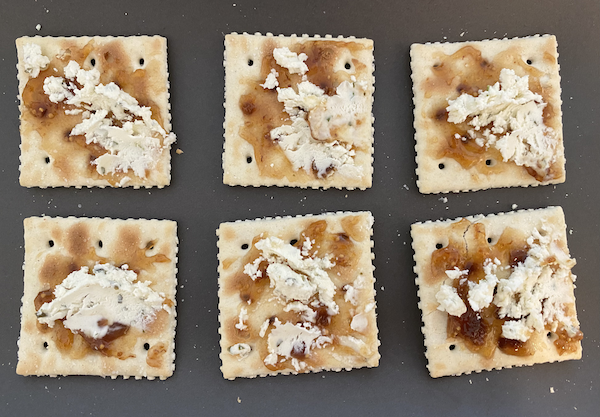

Cabbage Salad
Ingredient
1 cup of shredded cabbage
3 tsp of sesame dressing
Direction
1. Put shredded cabbage into a bowl
2. Pour sesame dressing and mix well
1 cup of shredded cabbage
3 tsp of sesame dressing
1. Put shredded cabbage into a bowl
2. Pour sesame dressing and mix well
6 crackers
4 tsp of fig jam
3 tsp of cheese (garlic&fine herbs)
1. Spread fig jam on the crackers
2. Spread garlic&fine herbs cheese on top of the jam
1 cup of your choice of cereal
1/2 cup of milk
1. Pour cereal into a bowl
2. Pour milk over the cereal